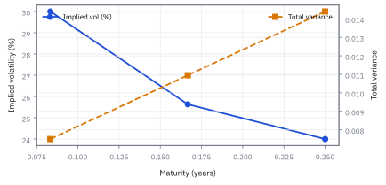

13.5 Multidimensional Itô and the Product Rule
เมื่อสอง process สุ่มพร้อมกัน ผลคูณของการขยับ $dX\,dY$ ไม่หายไป แต่เท่ากับ correlation คูณเวลา พจน์นี้เพิ่ม drift ของผลคูณ และทำให้ความผันผวนรวมกันแบบ variance ไม่ใช่บวกตรง ๆ
โต๊ะ structured note ออก note สมมติที่จ่าย \$1 ล้าน คูณผลตอบแทนสะสมหนึ่งปีของ SPY คูณของ QQQ แบบจำลองของโต๊ะให้ SPY มี drift 8% ความผันผวน 20% ให้ QQQ มี drift 10% ความผันผวน 25% และ correlation 0.60 นักวิเคราะห์บวก drift ได้ 18% จึงคาดว่าจ่ายเฉลี่ย $10^6e^{0.18}=\$1{,}197{,}217$ และบวกความผันผวนได้ 45% ใช้สองตัวเลขนี้ได้ไหม?
ลองตอบก่อนเปิดเฉลย
ไม่ได้ ผลคูณมี drift $0.08+0.10+0.60(0.20)(0.25)=0.21$ จ่ายเฉลี่ย \$1,233,678 มากกว่าที่คิด \$36,461 และความผันผวนของผลคูณคือ $\sqrt{0.04+0.0625+2(0.03)}=40.31\%$ ไม่ใช่ 45% ทั้งสองความผิดมาจากพจน์เดียวกัน คือ $dX\,dY=\rho\sigma_X\sigma_YXY\,dt$ ที่ calculus ปกติทิ้งไป
สิ่งที่เราจะสร้าง
13.1 ถึง 13.4 มีแหล่งความสุ่มแหล่งเดียว แต่งานจริงแทบไม่เคยมีตัวเดียว note ที่อ้างอิงสองดัชนี หุ้นต่างประเทศที่ต้องคูณอัตราแลกเปลี่ยน หรือส่วนต่างของคู่หุ้น ล้วนเป็นฟังก์ชันของสอง process ที่สุ่มพร้อมกัน หน้านี้ขยายตารางคูณของ 13.1 ให้มีผลคูณไขว้ $dW^X\,dW^Y$ แล้วขยาย Itô's lemma ของ 13.2 ไปสองตัวแปร
ลำดับคือ: เห็นพจน์ไขว้ในหนึ่งก้าวด้วยมือ สร้าง Brownian motion สองตัวที่ correlate กันด้วย Cholesky ของ 8.9 หา $dW^X\,dW^Y$ เขียน Itô สองตัวแปร ได้กฎผลคูณ ใช้กับ note ใช้กับอัตราส่วน ตรวจด้วยการเดิน SDE สองตัวทีละวัน แล้ววัดว่า correlation ที่ประมาณคลาดทำให้ราคาคลาดเท่าไร
ศัพท์ที่ใช้ในหัวข้อนี้
- Multidimensional Itô formula
- chain rule ของ $f(t,X,Y)$ เมื่อ $X$ และ $Y$ ขยับตาม SDE ทั้งคู่ เก็บพจน์กำลังสองของแต่ละตัวและพจน์ไขว้ $f_{XY}\,dX\,dY$ ใช้กับทุกสัญญาและพอร์ตที่ขึ้นกับหลายสินทรัพย์
- Itô product rule
- $d(XY)=X\,dY+Y\,dX+dX\,dY$ กฎผลคูณที่มีพจน์ที่สามเพิ่มจากของ calculus ปกติ
- Correlation ของ Brownian motion
- $\rho$ ใน $dW^X\,dW^Y=\rho\,dt$ คือ correlation ของการขยับสองตัวในทุกช่วงสั้น ๆ ใช้กำหนดขนาดของพจน์ไขว้
- Covariance term
- $\rho\sigma_X\sigma_Y$ ขนาดของพจน์ไขว้ต่อปี โผล่ทั้งใน drift ของผลคูณและใน variance ของมัน
- Total-return factor
- มูลค่าสะสมที่เริ่มที่ 1 และรวมทั้งราคากับเงินปันผล ใช้เทียบสินทรัพย์ที่ราคาต่างระดับกันในสัญญาเดียว
- Quanto
- สัญญาที่อ้างอิงสินทรัพย์ต่างประเทศแต่จ่ายเป็นเงินสกุลบ้าน ต้องคูณราคากับอัตราแลกเปลี่ยน จึงไวต่อพจน์ไขว้โดยตรง
สัญลักษณ์และหน่วย
| สัญลักษณ์ | ความหมาย | หน่วย |
|---|---|---|
| $X_t,\ Y_t$ | total-return factor ของ SPY และ QQQ เริ่มที่ 1 | ไม่มีหน่วย |
| $V_t,\ Z_t$ | ผลคูณ $X_tY_t$ และอัตราส่วน $X_t/Y_t$ | ไม่มีหน่วย |
| $\mu_X,\ \mu_Y$ | drift ของแต่ละตัว | ต่อปี |
| $\sigma_X,\ \sigma_Y$ | ความผันผวนของแต่ละตัว | ต่อ $\sqrt{\text{yr}}$ |
| $W^X,\ W^Y,\ W^\perp$ | Brownian motion ที่ขับ $X$, ที่ขับ $Y$ และตัวที่อิสระจาก $W^X$ | $\sqrt{\text{yr}}$ |
| $\rho$ | correlation ของ $dW^X$ กับ $dW^Y$ | ไม่มีหน่วย |
| $N$ | notional ของ note | \$ |
ขั้นที่ 1 — หนึ่งก้าวด้วยมือ: ผลคูณของสองตัวที่ไม่มี drift
โจทย์ให้อะไรมาบ้าง: สองตัวเริ่มที่ 1 แต่ละตัวขึ้น 10% หรือลง 10% อย่างละครึ่ง ค่าเฉลี่ยของแต่ละตัวจึงเป็น 1 เท่าเดิม ดูค่าเฉลี่ยของผลคูณในสามกรณี: ขยับไปด้วยกันเสมอ ($\rho=1$), สวนกันเสมอ ($\rho=-1$) และไม่เกี่ยวกัน ($\rho=0$ สี่แบบ แบบละ $\tfrac14$)
คำตอบ: แต่ละตัวเฉลี่ยไม่ขยับ แต่ผลคูณขยับได้ ขึ้นพร้อมกันได้ 1.21 ลงพร้อมกันได้ 0.81 ค่าเฉลี่ยจึงเกิน 1 อยู่ 1% ส่วนเกินคือค่าเฉลี่ยของ $\Delta X\,\Delta Y$ ซึ่งเท่ากับ correlation คูณขนาดการขยับของทั้งสองตัวพอดี
ตรวจเองใน 10 วินาที: $(1+\Delta X)(1+\Delta Y)=1+\Delta X+\Delta Y+\Delta X\,\Delta Y$ สองพจน์กลางเฉลี่ยศูนย์ เหลือพจน์สุดท้ายที่เป็น $+0.01$ หรือ $-0.01$ ทุกครั้งในสองกรณีแรก
ขั้นที่ 2 — สร้าง Brownian motion สองตัวที่ correlate กัน แล้วหาผลคูณไขว้ของการขยับ
8.9 สร้างคู่ Normal ที่มี correlation $\rho$ จากคู่อิสระด้วย Cholesky ทำแบบเดียวกันทีละท่อน: $\Delta W^Y=\rho\,\Delta W^X+\sqrt{1-\rho^2}\,\Delta W^\perp$ โดย $W^\perp$ อิสระจาก $W^X$ แล้วถามว่าผลรวมของผลคูณไขว้เหลือเท่าไรเมื่อบวกทั้งช่วง แบบที่ 13.1 ถามกับกำลังสอง
แต่ละผลคูณ $\Delta W^X_i\Delta W^\perp_i$ มีค่าเฉลี่ยศูนย์เพราะสองตัวอิสระ และ variance $\Delta t\cdot\Delta t$ บวก $n$ ท่อนได้ variance $T^2/n$ ซึ่งหายไป ผลคูณของ Brownian motion สองตัวที่อิสระจึงรวมกันเป็นศูนย์ ต่างจาก $(\Delta W)^2$ ที่ทุกท่อนเป็นบวกและรวมกันได้ $T$
ตารางคูณของ 13.1 จึงมีช่องใหม่หนึ่งช่อง $dW^X\,dW^Y=\rho\,dt$ ที่ $\rho=1$ มันกลับเป็น $(dW)^2=dt$ ที่ $\rho=0$ เป็นศูนย์ ส่วน $dt$ คูณอะไรก็ยังเป็นศูนย์
ขั้นที่ 3 — Itô สองตัวแปร: Taylor ที่เก็บพจน์ไขว้
ให้ $X$ และ $Y$ ขยับตาม SDE $dX=a_X\,dt+b_X\,dW^X$ และ $dY=a_Y\,dt+b_Y\,dW^Y$ ทำ Taylor ของ $f(t,x,y)$ ถึงอันดับสองแบบ 13.2 ขั้นที่ 2 แล้วใช้ตารางที่ขยายแล้ว: $(dX)^2=b_X^2\,dt$, $(dY)^2=b_Y^2\,dt$, $dX\,dY=\rho\,b_Xb_Y\,dt$
พจน์ไขว้ของ Taylor คือ $f_{xy}\,dX\,dY$ ไม่มี $\tfrac12$ เพราะใน Taylor สองตัวแปร $f_{xy}$ ปรากฏสองครั้ง ($xy$ และ $yx$) รวมกันได้ $2\cdot\tfrac12$ พอดี พจน์นี้มีขนาด $\rho\,b_Xb_Y\,dt$ จึงอยู่รอด ส่วนสุ่มของ $df$ คือ $f_xb_X\,dW^X+f_yb_Y\,dW^Y$ เหมือน calculus ปกติ
ขั้นที่ 4 — กฎผลคูณ: พจน์ที่สามทิ้งไม่ได้
ใส่ $f=xy$ ซึ่งมี $f_x=y$, $f_y=x$, $f_{xx}=f_{yy}=0$ และ $f_{xy}=1$ เทียบกับการกระจายวงเล็บของหนึ่งท่อนตรง ๆ ซึ่งเป็นพีชคณิตล้วน ไม่มีการประมาณ
ใน calculus ปกติพจน์ที่สามทิ้งได้เพราะของเล็กคูณของเล็ก แต่การขยับสุ่มแต่ละตัวมีขนาด $\sqrt{\Delta t}$ ผลคูณของมันจึงมีขนาด $\Delta t$ และรวมกันได้ $\rho\,b_Xb_Y$ คูณเวลา ขั้นที่ 1 คือพจน์นี้ในหนึ่งก้าว ถ้า $X=Y$ กฎนี้ให้ $d(X^2)=2X\,dX+(dX)^2$ ซึ่งคือ 13.2 ขั้นที่ 4 (a)
ขั้นที่ 5 — ผลคูณของสอง GBM ก็เป็น GBM แต่ drift มีพจน์ไขว้
ให้ SPY และ QQQ เป็น GBM ของ 13.2 คนละตัว $dX/X=\mu_X\,dt+\sigma_X\,dW^X$ และ $dY/Y=\mu_Y\,dt+\sigma_Y\,dW^Y$ หาพจน์ไขว้ก่อน แล้วแทนในกฎผลคูณ หารด้วย $V=XY$ ทั้งสมการ
บรรทัดแรกใช้ว่าส่วน drift ของ $dX$ และ $dY$ คูณกับอะไรก็ได้ $dt\,dW$ หรือ $(dt)^2$ ซึ่งเป็นศูนย์ เหลือแต่ส่วนสุ่มคูณส่วนสุ่ม ผลคือ drift ของผลคูณไม่ใช่แค่ผลบวกของ drift ยังมี covariance $\rho\sigma_X\sigma_Y$ ที่ไม่มีใครใส่เข้าไป มันงอกออกมาจากพจน์ที่ calculus ปกติทิ้ง
ขั้นที่ 6 — สองส่วนสุ่มรวมเป็นความผันผวนเดียว
ส่วนสุ่มของ $dV/V$ มีสองก้อน ยังไม่ใช่รูป GBM ที่มี $dW$ ตัวเดียว หาขนาดของผลรวมด้วย variance ของผลรวมสองตัวแปร (8.2) โดยใช้ตารางของขั้นที่ 2 ซึ่งเป็นเรื่องเดียวกับความเสี่ยงของพอร์ตสองสินทรัพย์
ผลรวมของสองก้อนเป็นการขยับ Normal ที่มี variance $\sigma_V^2\,dt$ จึงเขียนเป็น $\sigma_V\,dW^V$ ด้วย Brownian motion ตัวใหม่ได้ ถ้าสองตัวสวนกัน ($\rho\lt0$) ขนาดรวมเล็กกว่าผลบวก การบวกความผันผวนตรง ๆ คือการแอบสมมติว่า $\rho=1$
ขั้นที่ 7 — คำตอบของโจทย์เปิดเรื่อง
โจทย์ให้อะไรมาบ้าง: $\mu_X=0.08$, $\sigma_X=0.20$ (SPY ตามสมมติฐานของโต๊ะ note ซึ่งสูงกว่า 18% ใน 13.1 ถึง 13.4), $\mu_Y=0.10$, $\sigma_Y=0.25$ (QQQ), $\rho=0.60$ และ $N=\$1$ ล้าน ค่าเฉลี่ยของ GBM โตด้วย drift เต็ม (13.2 ขั้นที่ 7) จึงได้ $\mathbb E[V_1]=e^{\mu_V}$
คำตอบ: note จ่ายเฉลี่ย \$1,233,678 มากกว่าคำตอบที่ลืมพจน์ไขว้ \$36,461 และผลคูณผันผวน 40.31% ไม่ใช่ 45% ตัวเลขนี้เป็นค่าเฉลี่ยภายใต้ drift ของโลกจริงและยังไม่คิดลด ราคาจริงต้องเปลี่ยนไปใช้ risk-neutral measure ซึ่ง 13.6 ทำต่อ
ตรวจเองใน 10 วินาที: $e^{0.21}\approx1+0.21+0.0221+0.0015=1.2336$ และส่วนต่าง $e^{0.21}-e^{0.18}\approx e^{0.18}(0.0305)=0.0365$
Figure 13.5a — correlation เลื่อน drift ของผลคูณ

Figure 13.5b — ความผันผวนรวมกันแบบ variance

Figure 13.5c — แยกค่าเฉลี่ย \$1.234 ล้าน ออกเป็นก้อน

ขั้นที่ 8 — อัตราส่วนสองสินทรัพย์: ความโค้งของ 1/Y เพิ่ม drift
ผลงานเทียบกัน (SPY เทียบ QQQ) หรืออัตราแลกเปลี่ยนคือ $Z=X/Y$ ใช้ขั้นที่ 3 กับ $f=x/y$ ซึ่งมี $f_x=1/y$, $f_y=-x/y^2$, $f_{xx}=0$, $f_{yy}=2x/y^3$ และ $f_{xy}=-1/y^2$ แล้วหารด้วย $Z$
$1/y$ โค้งหงาย ความโค้งจึงเพิ่ม $\sigma_Y^2=0.0625$ ใน drift ส่วนพจน์ไขว้มาพร้อมเครื่องหมายลบเพราะ $f_{xy}\lt0$ calculus ปกติให้อัตราส่วนโต $0.08-0.10=-2\%$ คำตอบจริงคือ $+1.25\%$ ความโค้งเพิ่ม 6.25 จุด correlation หักไป 3 จุด
ในความผันผวน correlation มีเครื่องหมายลบ สองตัวที่ขยับไปด้วยกันหักล้างกันเมื่อหาร จึงเหลือ 20.62% ต่ำกว่าของแต่ละตัว
ขั้นที่ 9 — ตรวจด้วยการเดิน SDE สองตัวทีละวัน
โจทย์ให้อะไรมาบ้าง: โค้ดท้ายหน้าเดิน $X$ และ $Y$ วันละก้าว 252 ก้าว 20,000 เส้นทาง ด้วย seed 135 แต่ละก้าวสร้าง $\Delta W^Y$ จาก Cholesky ของขั้นที่ 2 แล้วคูณ $X$ ด้วย $1+\mu_X\Delta t+\sigma_X\Delta W^X$ (และ $Y$ ทำนองเดียวกัน) ไม่มีสูตรของขั้นที่ 5 ถึง 8 อยู่ข้างใน
| ค่า | ทฤษฎี | ได้จากการเดิน SDE | ห่างกี่ SE |
|---|---|---|---|
| ค่าเฉลี่ย $V_1$ | 1.23368 (Itô) | 1.23187 | −0.5 |
| ค่าเฉลี่ย $V_1$ | 1.19722 (บวก drift) | 1.23187 | +9.5 |
| ค่าเฉลี่ย $Z_1$ | 1.01258 | 1.01402 | +1.0 |
| SD ของ $\ln V_1$ | 0.4031 | 0.4027 | — |
| ค่าเฉลี่ย $\sum\Delta W^X\Delta W^Y$ | 0.60 | 0.6005 | — |
| ค่าเฉลี่ย $\sum\Delta W^X\Delta W^\perp$ | 0 | −0.0001 | — |
คำตอบ: ค่าเฉลี่ยของผลคูณตกใกล้ค่าของ Itô ภายใน 0.5 SE และห่างคำตอบแบบบวก drift 9.5 SE อัตราส่วนก็ตรงภายใน 1 SE สองแถวล่างคือตารางของขั้นที่ 2 ที่วัดได้จริง: ผลรวมผลคูณไขว้เฉลี่ย $\rho T=0.60$ และของคู่อิสระเฉลี่ยศูนย์
ตรวจเองใน 10 วินาที: SD ของ $V_1$ คือ $e^{0.21}\sqrt{e^{0.1625}-1}=1.2337(0.4201)=0.518$ หารด้วย $\sqrt{20{,}000}=141.4$ ได้ SE 0.00366 และ $(1.23187-1.23368)/0.00366\approx-0.5$
ขั้นที่ 10 — correlation ที่ประมาณคลาด ทำให้ราคาคลาดเท่าไร
$\rho=0.60$ มาจากข้อมูล ไม่ได้มาจากฟ้า ค่าที่ประมาณจากผลตอบแทนรายวันหนึ่งปีมี SE ราว $(1-\rho^2)/\sqrt n$ (ค่าประมาณมาตรฐานของ correlation ในตัวอย่างขนาดใหญ่ ยกมาใช้) แล้วหาว่าค่าเฉลี่ยของ note ไวต่อ $\rho$ แค่ไหน
ทุก 0.01 ของ correlation ย้ายค่าเฉลี่ยของ note ราว \$617 และข้อมูลหนึ่งปีปักหมุด $\rho$ ได้แค่ ±0.04 ความไม่แน่นอนของราคาจากตัวนี้ตัวเดียวคือราว ±\$2,500 ต่อ \$1 ล้าน โต๊ะจึงต้องรายงานความไวต่อ correlation แยกจากความไวต่อราคาและความผันผวน
คำถามที่ควรถามออกมาดัง ๆ
ทำไม drift ของผลคูณมีพจน์ไขว้ แต่ drift ของผลบวก $X+Y$ ไม่มี? เพราะ $f=x+y$ มี $f_{xy}=0$ พจน์ไขว้ในขั้นที่ 3 คูณด้วย $f_{xy}$ มันจึงทำงานเฉพาะกับฟังก์ชันที่ “โค้งไขว้” อย่างผลคูณหรืออัตราส่วน พอร์ตที่บวกมูลค่าสองตัวมี drift เป็นผลบวกตรง ๆ แต่ความผันผวนยังรวมแบบขั้นที่ 6
ถ้า $\rho=0$ ผลคูณเหมือน calculus ปกติทุกอย่างไหม? drift ใช่ แต่อัตราส่วนยังไม่ใช่ ที่ $\rho=0$ อัตราส่วนยังได้ $+\sigma_Y^2$ จากความโค้งของ $1/y$ คือโต 4.25% ไม่ใช่ −2% (โจทย์ข้อ 2)
correlation ของผลตอบแทนรายวันคือ $\rho$ ตัวนี้ไหม? ในแบบจำลองใช่ ผลตอบแทนรายวันของสอง GBM มี correlation ใกล้ $\rho$ มาก ในตลาดจริง correlation เปลี่ยนตามเวลาและพุ่งขึ้นในวันวิกฤติ ค่าที่ใช้ตั้งราคาจึงเป็นการตัดสินใจ ไม่ใช่ตัวเลขที่อ่านได้ตรง ๆ
ความผิดที่ให้ตัวเลขผิดโดยไม่มีใครเตือน
บวก drift ของสองตัว: ค่าเฉลี่ยของ note ต่ำไป \$36,461 ต่อ \$1 ล้าน ความผิดนี้ใหญ่ขึ้นตาม $\rho$ และตามความผันผวน ที่ $\rho=1$ พจน์ไขว้เป็น 0.05 ทั้งก้อน
บวกความผันผวนตรง ๆ: ได้ 45% แทน 40.31% สูงไป 4.7 จุด option บนผลคูณที่ตั้งราคาด้วย 45% จะแพงเกินไป และ hedge ratio ผิดทั้งชุด
กลับตัวแปรแล้วลืมกลับเครื่องหมาย: correlation ผูกกับนิยามของตัวแปร ถ้า quote อัตราแลกเปลี่ยนกลับด้าน เช่นจากบาทต่อดอลลาร์เป็นดอลลาร์ต่อบาท เครื่องหมายของ $\rho$ ต้องกลับด้วย ถ้าลืม อัตราส่วนในขั้นที่ 8 จะได้ drift $0.08-0.10+0.0625+0.030=7.25\%$ แทน 1.25% ผิด 6 จุด
ใช้ทำอะไรบนโต๊ะจริง
ทุกสัญญาที่อ้างอิงหลายสินทรัพย์ใช้หน้านี้: basket, spread, best-of และ quanto ที่คูณราคาหุ้นต่างประเทศกับอัตราแลกเปลี่ยน สำหรับนักลงทุนไทยที่ถือ SPY มูลค่าเป็นบาทคือราคาดอลลาร์คูณอัตราบาทต่อดอลลาร์ ซึ่งเป็นกฎผลคูณตรง ๆ (โจทย์ข้อ 3)
ในบทที่ 14 กฎผลคูณเป็นเครื่องมือหลักตอนตั้งพอร์ตเลียนแบบที่ถือทั้งหุ้นและเงินสด และ 13.6 จะใช้มันพิสูจน์ว่าราคาที่คิดลดด้วยดอกเบี้ยกลายเป็น martingale หลังเปลี่ยน measure
สามโจทย์ตรวจความเข้าใจ
1. ใช้ตัวเลขเดิมทั้งหมด แต่ $\rho=-0.40$ ผลคูณมี drift และความผันผวนเท่าไร และ note จ่ายเฉลี่ยเท่าไร?
เฉลย
พจน์ไขว้ $-0.40(0.05)=-0.02$ drift $0.18-0.02=0.16$ variance $0.1025-0.04=0.0625$ ความผันผวน 25% จ่ายเฉลี่ย $10^6e^{0.16}=\$1{,}173{,}511$ ลดลง \$60,167 จากกรณี $\rho=0.6$ ทั้งที่ drift ของแต่ละตัวไม่เปลี่ยนเลย
2. ที่ $\rho=0$ อัตราส่วน SPY ต่อ QQQ มี drift และความผันผวนเท่าไร?
เฉลย
drift $0.08-0.10+0.0625-0=0.0425$ คือ 4.25% ต่อปี ความผันผวน $\sqrt{0.04+0.0625}=\sqrt{0.1025}=32.02\%$ แม้สองตัวไม่เกี่ยวกัน drift ของอัตราส่วนก็ไม่ใช่ผลต่าง −2% เพราะความโค้งของ $1/y$ ยังอยู่
3. นักลงทุนไทยถือ SPY (drift 8% ความผันผวน 20%) อัตราบาทต่อดอลลาร์สมมติว่าไม่มี drift ความผันผวน 8% และ correlation กับ SPY −0.30 (ตอนหุ้นสหรัฐลง ดอลลาร์มักแข็ง) มูลค่าเป็นบาทมี drift และความผันผวนเท่าไร?
เฉลย
เป็นผลคูณของสอง GBM: drift $0.08+0+(-0.30)(0.20)(0.08)=0.08-0.0048=0.0752$ variance $0.04+0.0064-0.0096=0.0368$ ความผันผวน 19.18% correlation ติดลบทำให้เงินบาทเป็น hedge บางส่วน: ความผันผวนต่ำกว่าถือ SPY เป็นดอลลาร์ แลกกับ drift ที่ลดลง 0.48 จุด
คำนวณซ้ำด้วย JavaScript
รันใน Node.js ได้โดยไม่ต้องติดตั้งอะไร ฟังก์ชัน pairDynamics คือผลของขั้นที่ 5, 6 และ 8 ส่วน simulatePair เดิน SDE สองตัวทีละวันด้วย Cholesky และเครื่องสุ่มที่มี seed เพื่อเทียบ ฟังก์ชันปฏิเสธ input ที่ไม่มีความหมาย และพิมพ์ JSON บรรทัดเดียว
function checkPair(p) {
const {muX, muY, sX, sY, rho} = p;
if (![muX, muY, sX, sY, rho].every(Number.isFinite)) throw new TypeError('Drifts, volatilities and correlation must be finite numbers');
if (sX <= 0 || sY <= 0 || Math.abs(rho) > 1) throw new RangeError('Need volatilities > 0 and -1 <= rho <= 1');
}
// Two GBMs dX/X = muX dt + sX dWx, dY/Y = muY dt + sY dWy with dWx dWy = rho dt.
// Product V = XY: d(XY) = X dY + Y dX + dX dY, and dX dY = rho sX sY XY dt.
// Ratio Z = X/Y: 1/Y has drift -muY + sY^2, and the cross term enters with a minus sign.
function pairDynamics(p) {
checkPair(p);
const {muX, muY, sX, sY, rho} = p, cross = rho * sX * sY;
return {cross, product: {drift: muX + muY + cross, vol: Math.sqrt(sX * sX + sY * sY + 2 * cross)},
ratio: {drift: muX - muY + sY * sY - cross, vol: Math.sqrt(sX * sX + sY * sY - 2 * cross)}};
}
// mulberry32 + Box-Muller: seeded standard Normals, the same generator as 13.1.
function normals(seed) {
let a = seed >>> 0, spare = null;
const u = () => {
a = (a + 0x6D2B79F5) >>> 0;
let t = Math.imul(a ^ (a >>> 15), a | 1);
t ^= t + Math.imul(t ^ (t >>> 7), t | 61);
return (((t ^ (t >>> 14)) >>> 0) + 0.5) / 4294967296;
};
return () => {
if (spare !== null) { const z = spare; spare = null; return z; }
const r = Math.sqrt(-2 * Math.log(u())), angle = 2 * Math.PI * u();
spare = r * Math.sin(angle);
return r * Math.cos(angle);
};
}
// Step both SDEs daily from 1; dWy = rho dWx + sqrt(1 - rho^2) dW_perp (Cholesky, 8.9). No Ito result is used.
function simulatePair(p, paths, steps, seed) {
checkPair(p);
if (!Number.isInteger(paths) || paths < 2 || !Number.isInteger(steps) || steps < 1) throw new RangeError('Need whole numbers paths >= 2 and steps >= 1');
const {muX, muY, sX, sY, rho} = p, z = normals(seed), dt = 1 / steps, sq = Math.sqrt(dt), c = Math.sqrt(1 - rho * rho);
let sV = 0, sZ = 0, sL = 0, sL2 = 0, cxy = 0, qx = 0, qy = 0, perp = 0;
for (let k = 0; k < paths; k++) {
let X = 1, Y = 1, crossSum = 0, perpSum = 0, sqX = 0, sqY = 0;
for (let i = 0; i < steps; i++) {
const a = sq * z(), b = sq * z(), dWy = rho * a + c * b;
X *= 1 + muX * dt + sX * a; Y *= 1 + muY * dt + sY * dWy;
crossSum += a * dWy; perpSum += a * b; sqX += a * a; sqY += dWy * dWy;
}
const L = Math.log(X * Y);
sV += X * Y; sZ += X / Y; sL += L; sL2 += L * L; cxy += crossSum; qx += sqX; qy += sqY; perp += perpSum;
}
const mL = sL / paths;
return {meanV: sV / paths, meanZ: sZ / paths, sdLogV: Math.sqrt((sL2 - paths * mL * mL) / (paths - 1)),
meanCross: cxy / paths, meanSqX: qx / paths, meanSqY: qy / paths, meanPerp: perp / paths};
}
const desk = {muX: 0.08, muY: 0.10, sX: 0.20, sY: 0.25, rho: 0.60};
const d = pairDynamics(desk), N = 20000, sim = simulatePair(desk, N, 252, 135);
const sdV = Math.exp(d.product.drift) * Math.sqrt(Math.exp(d.product.vol ** 2) - 1);
const sdZ = Math.exp(d.ratio.drift) * Math.sqrt(Math.exp(d.ratio.vol ** 2) - 1);
const neg = pairDynamics({...desk, rho: -0.40}), zeroRho = pairDynamics({...desk, rho: 0});
const thb = pairDynamics({muX: 0.08, muY: 0, sX: 0.20, sY: 0.08, rho: -0.30});
const rhoSE = (1 - desk.rho ** 2) / Math.sqrt(252), slope = 1e6 * desk.sX * desk.sY * Math.exp(d.product.drift);
console.log(JSON.stringify({
coin: {together: 0.5 * 1.1 * 1.1 + 0.5 * 0.9 * 0.9, opposite: 1.1 * 0.9, unrelated: (1.21 + 0.99 + 0.99 + 0.81) / 4},
perpSD: Math.sqrt(252) / 252,
d, note: {ito: 1e6 * Math.exp(d.product.drift), sumOfDrifts: 1e6 * Math.exp(desk.muX + desk.muY),
gap: 1e6 * (Math.exp(d.product.drift) - Math.exp(desk.muX + desk.muY)), naiveVol: desk.sX + desk.sY},
bars: [1, Math.exp(0.08) - 1, Math.exp(0.18) - Math.exp(0.08), Math.exp(0.21) - Math.exp(0.18)].map(x => 1e3 * x),
ratioChainRule: desk.muX - desk.muY, ratioWrongSign: desk.muX - desk.muY + desk.sY ** 2 + d.cross,
sim, se: {V: sdV / Math.sqrt(N), Z: sdZ / Math.sqrt(N)},
z: {V: (sim.meanV - Math.exp(d.product.drift)) / (sdV / Math.sqrt(N)), Z: (sim.meanZ - Math.exp(d.ratio.drift)) / (sdZ / Math.sqrt(N)),
sumOfDrifts: (sim.meanV - Math.exp(desk.muX + desk.muY)) / (sdV / Math.sqrt(N))},
rhoRisk: {se: rhoSE, slope, dollars: slope * rhoSE},
exercises: {negative: {...neg, mean: 1e6 * Math.exp(neg.product.drift), drop: 1e6 * (Math.exp(d.product.drift) - Math.exp(neg.product.drift))},
zeroRho: zeroRho.ratio, thb: thb.product}
}));ที่มาที่ไป
Itô ให้สูตรหลายมิติไว้ในงานปี 1951 พร้อมกับสูตรตัวแปรเดียว ในตลาด ความจำเป็นเกิดชัดเมื่อสัญญาที่อ้างอิงหลายสินทรัพย์และ quanto แพร่หลายในทศวรรษ 1990 ซึ่งต้องคูณราคาหุ้นด้วยอัตราแลกเปลี่ยน ก่อนหน้านั้นการบวก drift ของสองตัวตรง ๆ เป็นความผิดที่พบบ่อย และพจน์ไขว้ของหน้านี้คือที่มาของการปรับ drift ใน quanto ที่โต๊ะ option ใช้ทุกวัน
ข้อจำกัด: สมมติอะไร และของจริงเป็นอย่างไร
| เรื่อง | หน้านี้สมมติว่า | ของจริง | ผลเวลาใช้งาน |
|---|---|---|---|
| correlation | $\rho$ คงที่ | เปลี่ยนตลอดเวลาและพุ่งขึ้นในวิกฤติ | ราคาสัญญาหลายสินทรัพย์ไวต่อค่านี้ (\$617 ต่อ 0.01) และค่านี้ประมาณได้หยาบ (±0.04 จากหนึ่งปี) |
| จำนวนแหล่งสุ่ม | สองแหล่ง | มีปัจจัยร่วมที่ไม่ได้ใส่ | ความเสี่ยงที่มองไม่เห็นโผล่เป็นความคลาดที่อธิบายไม่ได้ |
| ความต่อเนื่อง | ทั้งสองตัวเดินต่อเนื่อง | กระโดดพร้อมกันในวันข่าวใหญ่ | ความเสี่ยงร่วมในวันวิกฤติสูงกว่าที่แบบจำลองบอก |
สิ่งที่ควรตอบได้หลังอ่าน
- ตารางคูณมีช่องใหม่ $dW^X\,dW^Y=\rho\,dt$ มาจาก Cholesky และจาก $dW^X\,dW^\perp=0$ (ผลรวมมี SD $\sqrt{1/n}$)
- Itô สองตัวแปรเพิ่ม $\tfrac12b_X^2f_{xx}+\tfrac12b_Y^2f_{yy}+\rho b_Xb_Yf_{xy}$ ใน drift และกฎผลคูณคือ $d(XY)=X\,dY+Y\,dX+dX\,dY$
- ผลคูณของสอง GBM: drift $\mu_X+\mu_Y+\rho\sigma_X\sigma_Y$ และ $\sigma_V^2=\sigma_X^2+\sigma_Y^2+2\rho\sigma_X\sigma_Y$
- note SPY คูณ QQQ: จ่ายเฉลี่ย \$1,233,678 ไม่ใช่ \$1,197,217 ความผันผวน 40.31% ไม่ใช่ 45% และไวต่อ correlation \$617 ต่อ 0.01
- อัตราส่วน $X/Y$ ได้ $+\sigma_Y^2$ จากความโค้งและ $-\rho\sigma_X\sigma_Y$ จากพจน์ไขว้: 1.25% ไม่ใช่ −2%
13.6 จะใช้กฎผลคูณกับราคาหุ้นคูณน้ำหนักของการเปลี่ยน measure แล้วถามว่าทำไมราคาของ option ไม่ขึ้นกับ drift ของหุ้นเลย